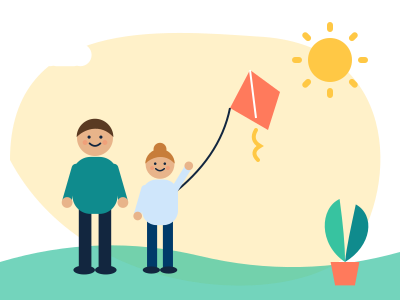

Waiting for a first smartphone
Thank you for taking part. This is everything we're asking, on one page.

What we're asking
Until April 2028, please hold off getting your child their own smartphone.
Nothing else needs to change. Your child can still:
- Use a family tablet or computer
- Borrow your phone, with you
- Play games and watch TV, as now
Why it matters
Nobody knows yet the best age for a first smartphone. By waiting a little longer, your family is helping to answer that question for parents everywhere. Other families at your child's school are taking part too, so your child won't be the only one waiting.
Five things that make it easier
- Tell your child together, and say why. Children find waiting easier when they know the reason, and know it isn't forever."Our school is helping with a big study about children and phones. We're one of the families waiting a bit longer for a phone. It's until April 2028, and it helps grown-ups work out what's best for children."
There's also a 3-minute video about the study that you can watch with your child.
- Put the date on the calendar. Mark April 2028 somewhere your child can see it. A clear end date makes waiting feel fair.
- Tell family and friends early. Phones are a common birthday or Christmas present. Let grandparents and others know about the study now, so nobody is caught out.
- Agree how you'll stay in touch. For trips and clubs, your child can borrow a family phone. If you think your child needs a phone of their own for safety, email smartphonestudy@public.io first and we'll talk it through.
- Plan ahead for secondary school. Starting Year 7 is when many children get a phone. If your child moves up during the study, plan the journey to school, and how you'll keep in touch, before the summer.
If you hear "Everyone else has one"
It's normal for children to say this. Listen, agree that waiting can feel hard, and remind them of the date and the reason.
If your child does get a smartphone
It happens, and it's fine to tell us. Please stay in the study and let us know at smartphonestudy@public.io. Your answers are still really useful.